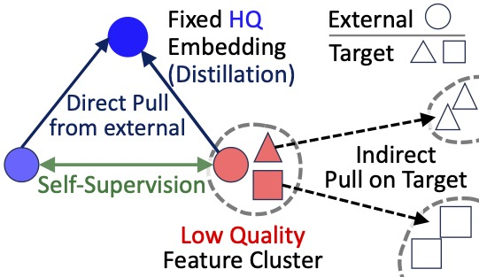
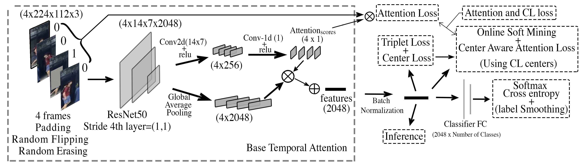
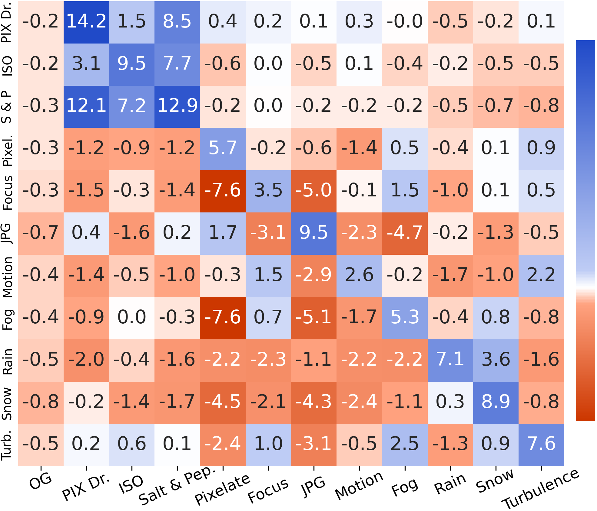
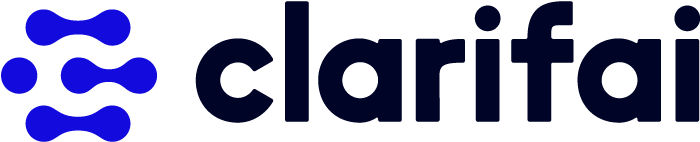

With great Noises, Comes great Robustness
Noise RobustnessOpening Black BoxOODZero-shotVLMsPrompts
I am a final year Computer Vision Ph.D. Candidate (Jan'23 - May'27) at University of Central Florida under Prof. Yogesh S. Rawat. My research focuses on Interpretable / Explainable AI, Re-Identification (ReID), and Targetted Adaptation. Prior to UCF, I earned my Master’s in Computer Science from New York University (NYU) Courant, where I completed my thesis under the guidance of Prof. Rob Fergus. I hold Dual Bachelor of Technology (B.Tech) degrees in Electrical Engineering and Computer Science from the Indian Institute of Technology (IIT) Kanpur.

My research centers on efficient training of computer vision models, with a strong emphasis on improving robustness to real-world noise, such as fog, rain, and snow in autonomous driving. I primarily focus on Targetted adaptation while preserving the zero-shot properties of VLMs (transformers), with a specific emphasis on object detection. I also have substantial experience in interpretable and explainable AI and Visualization, enabling easy-to-understand insights into models (opening black box). In parallel, I have been actively working on Re Identification (ReID) for the past seven years, which was the core of my Master’s thesis and Amazon internship.











I sometimes open-source implementation of others' papers.